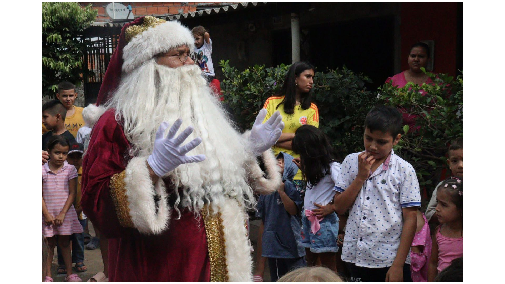
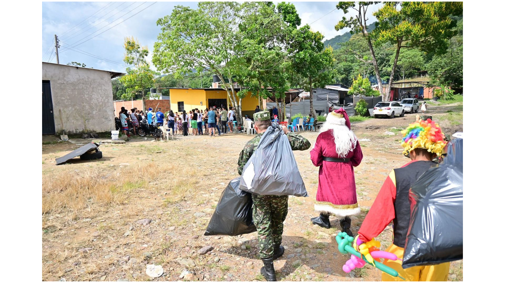
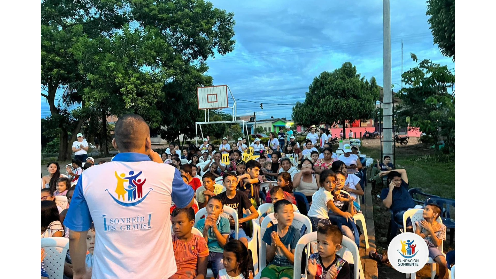

Jornadas recreativas
Espacios de juego, música y arte para que los niños y niñas vivan experiencias de alegría, participación y aprendizaje en comunidad.
Acompañamos a niños, niñas y sus familias en situación de vulnerabilidad a través de jornadas recreativas, formación en valores y acciones comunitarias llenas de amor y esperanza.
Descubre cómo puedes vincularte como voluntario, aliado o donante, y sé parte de una comunidad que cree en el poder de una sonrisa para cambiar realidades.





Desarrollamos programas integrales que combinan recreación, acompañamiento familiar y formación en valores, para aportar al bienestar de la niñez en el departamento del Meta.
Espacios de juego, música y arte para que los niños y niñas vivan experiencias de alegría, participación y aprendizaje en comunidad.
Talleres y encuentros donde se trabajan temas como respeto, solidaridad, autocuidado y proyecto de vida para la niñez y sus familias.
Procesos de apoyo y orientación para fortalecer hogares protectores, amorosos y comprometidos con el bienestar de los más pequeños.
Tu apoyo nos permite llegar a más niños y niñas. Puedes unirte como voluntario, hacer una donación o vincular tu empresa o institución como aliada estratégica.
Acompaña actividades, apoya la logística de jornadas, comparte tus talentos y experiencias con los niños y niñas.
Quiero ser voluntarioCon tu aporte apoyas la compra de refrigerios, kits escolares, materiales lúdicos y el transporte para llegar a más comunidades.
Ver formas de donarEmpresas, instituciones educativas y organizaciones que se unen para desarrollar proyectos de impacto social conjunto.
Ser aliado de la FundaciónTrabajamos de la mano con instituciones y empresas que creen en la responsabilidad social y en el poder de transformar realidades desde la niñez.
¿Te gustaría vincular tu organización como aliada de la Fundación Sonriente? Escríbenos y construyamos juntos nuevos proyectos.